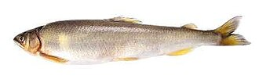

あゆの生産量 都道府県ランキング
全31都道府県の順位と収獲量
最終更新：
あゆの収獲量が全国で最も多いのは岐阜県で、885 tです。全国（3,487 t）の25%を占めます。

| 順位 | 都道府県 | 収獲量 | 全国に占める割合 |
|---|---|---|---|
| 1位 | 岐阜県 | 885 t | 25% |
| 2位 | 愛知県 | 844 t | 24% |
| 3位 | 和歌山県 | 605 t | 17% |
| 4位 | 栃木県 | 305 t | 8.7% |
| 5位 | 滋賀県 | 216 t | 6.2% |
| 6位 | 徳島県 | 134 t | 3.8% |
| 7位 | 宮崎県 | 109 t | 3.1% |
| 8位 | 静岡県 | 74 t | 2.1% |
| 9位 | 大分県 | 59 t | 1.7% |
| 10位 | 千葉県 | 35 t | 1.0% |
| 11位 | 熊本県 | 34 t | 1.0% |
| 12位 | 長野県 | 30 t | 0.9% |
| 13位 | 富山県 | 25 t | 0.7% |
| 14位 | 山口県 | 18 t | 0.5% |
| 15位 | 福島県 | 13 t | 0.4% |
| 16位 | 宮城県 | 12 t | 0.3% |
| 17位 | 高知県 | 12 t | 0.3% |
| 18位 | 秋田県 | 10 t | 0.3% |
| 19位 | 島根県 | 9 t | 0.3% |
| 20位 | 岩手県 | 8 t | 0.2% |
| 21位 | 三重県 | 8 t | 0.2% |
| 22位 | 山形県 | 7 t | 0.2% |
| 23位 | 神奈川県 | 7 t | 0.2% |
| 24位 | 鹿児島県 | 7 t | 0.2% |
| 25位 | 群馬県 | 5 t | 0.1% |
| 26位 | 新潟県 | 5 t | 0.1% |
| 27位 | 山梨県 | 5 t | 0.1% |
| 28位 | 岡山県 | 4 t | 0.1% |
| 29位 | 福岡県 | 2 t | 0.1% |
| 30位 | 青森県 | 1 t | 0.0% |
| 31位 | 兵庫県 | 1 t | 0.0% |
PR

あゆの生産量の推移（令和2年〜令和6年）
全国の収獲量は、令和2年の4,044 tから令和6年の3,487 tへ、14%減りました。1位は入れ替わっています（令和2年は愛知県、令和5年は岐阜県）。
| 年 | 全国 | 1位 | 2位 | 3位 |
|---|---|---|---|---|
| 令和6年 | 3,487 t | 岐阜県885 t | 愛知県844 t | 和歌山県605 t |
| 令和5年 | 3,385 t | 岐阜県900 t | 愛知県833 t | 和歌山県599 t |
| 令和4年 | 3,683 t | 愛知県1,057 t | 岐阜県861 t | 和歌山県591 t |
| 令和3年 | 3,909 t | 愛知県1,247 t | 岐阜県838 t | 和歌山県580 t |
| 令和2年 | 4,044 t | 愛知県1,189 t | 岐阜県906 t | 和歌山県630 t |
この数字について
- 分類：川や湖の魚
- 全国の収獲量：3,487 t
- この数字が表すもの：収獲量（養殖による収獲量）
- 調査：内水面漁業生産統計調査（内水面養殖業） 令和6年
- この品目は川や湖の養殖の統計です。
- 31県分を調査（調査していない県は順位に入りません）
あゆの生産量について、よくある質問
- あゆの生産量が日本一の都道府県はどこですか？
- 岐阜県です。内水面漁業生産統計調査（内水面養殖業）（令和6年）で885 tでした。
- あゆの生産量ランキング2位・3位はどこですか？
- 2位は愛知県（844 t）、3位は和歌山県（605 t）です。
- あゆの生産量ランキング4位・5位はどこですか？
- 4位は栃木県（305 t）、5位は滋賀県（216 t）です。あゆの全31県の順位は上の表のとおりです。
- あゆの全国の生産量はどれくらいですか？
- 3,487 t（令和6年）です。
広告